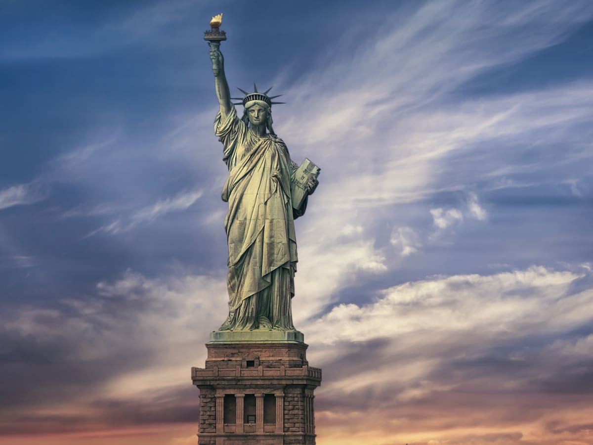

This page is meant to describe the route we suggest to walk and information about some things you will go through and pass by.
Central Park is one of the biggest parks on the island Manhattan in New York City. It is the most famous park of New York and maybe even from the US. Central Park is used for multipe films and tv shows. With an average of 25 million visitors Central Park is the most visited park in the U.S. It contains different designed lakes, a lot of hiking trails, 2 ice skating rinks, a lake where you can row in, animal cemetery, open grass fields that are used for multiple different sports and used to picknick and there are also multiple playgrounds. The park is a lot visited by birds and because of that there are also a lot of bird spotters around that area. The 10 kilometre long road that surrounds the park is popular with the joggers, cyclers and inline-skaters especially in the week-ends and after 19:00, when the car traffic is banned.
However the park is referred as a nice oasis of peace in the ‘’city that never sleeps’’,was Central Park, once according to crime statistics a dangerous place. Especially after dawn. The parks was around 2015 in the day safe, but in older times robbery’s and rapes weren’t rare. The crime rate held a lot of people back from going to Central Parks.

Times Square is a major commercial intersection, tourist destination, entertainment center, and neighborhood in the Midtown Manhattan section of New York City, at the junction of Broadway and Seventh Avenue. Brightly lit by numerous billboards and advertisements, it stretches from West 42nd to West 47th Streets, and is sometimes referred to as "the Crossroads of the World", "the Center of the Universe", "the heart of the Great White Way", and "the heart of the world". One of the world's busiest pedestrian areas, it is also the hub of the Broadway Theater District and a major center of the world's entertainment industry. Times Square is one of the world's most visited tourist attractions, drawing an estimated 50 million visitors annually. Approximately 330,000 people pass through Times Square daily, many of them tourists, while over 460,000 pedestrians walk through Times Square on its busiest days. Formerly known as Longacre Square, Times Square was renamed in 1904 after The New York Times moved its headquarters to the then newly erected Times Building, now One Times Square. It is the site of the annual New Year's Eve ball drop, which began on December 31, 1907, and continues to attract over a million visitors to Times Square every year. Times Square functions as a town square, but is not geometrically a square; it is closer in shape to a bowtie, with two triangles emanating roughly north and south from 45th Street, where Seventh Avenue intersects Broadway.
The statue of liberty is a statue in the New York Bay. The statue is a symbol for freedom, one of the core value's of the United States, and it counts as the welcoming of everybody: Americans that are coming back, guests and immigrants
The statue is 46 meters tall (93 meters tall if the pedastal is also counted) and it has a weight of 225 tons and the Statue was a gift from france in honor of centanary of the Decleration of independence and also as a sign of friendship. On the plaque in her left hand says "JULY IV MDCCLXXVI", the date ( fourth of July 1776) of the decleration in roman numerals. On the pedastel is the sonnet The new Colossus (1883) from the Jewish writer Emma Lazarus, with the famous line Give me your tired, your poor, which would express American hospitality.
The statue was finished in July of 1884 in France, and was given to the United States as a gift. In June of 1885 the Statue arrived at the port of New York, after it made a journey across the Atlantic Ocean on the french boat Isere. While on this journey the statue was broken up in 350 pieces, diveded in 214 crates. In April of 1886 the pedastel was finished. In a a time frame of 4 months the statue was put together. On the 28th of October 1886 the Statueof Liberty was inaugrated. Maurive Koechlin, a coworker of Eiffel, was given the lead in manufacturing the structure. The pedastel was made of granet, after a design by the American architect Richard Morris Hunt. The crown consists of seven points symbolizing the seven continents and the seas. On the 15th of October 1924 the statue was designated a national monument along with Fort Wood. In 1935, all of bedlou's island was added and was renamed Liberty Island. From 1984 to 1986 the statue was restored, replacing the torch with a 24-carat gold leaf flame. Since 1984 the Statue of Liberty is on the UNESCO World Heritage List. After 9/11 was closed for a few years. In 2003 the at the time 118 year old monument got restored again, especially to increase the safety of vistitors and to ensure the preservation of the image. Since the summer of 2004 you are allowed to visit the Statue of liberty again. There is a ferry service from battery park on the southern tip of Manhatten to Liberty Island, the island on which the Statue of Liberty is located, andto Ellis Island, where the immigrant arrival halls can be visited. On independence Day (4th of July) 2009 the crown of the Statue of Liberty was opened for the first time since 9/11.
The picture above you can see the route we recommend you to walk. On this page we gave you some information about the places you will be passing through. On the end near the Statue of Liberty you can take the boat or choose to look at it from a distance.